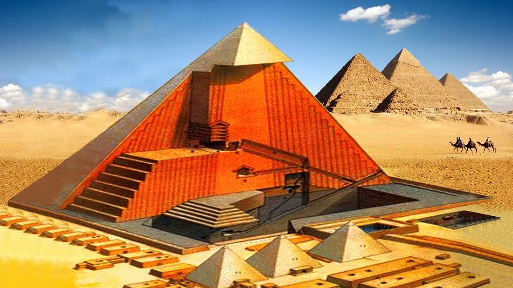
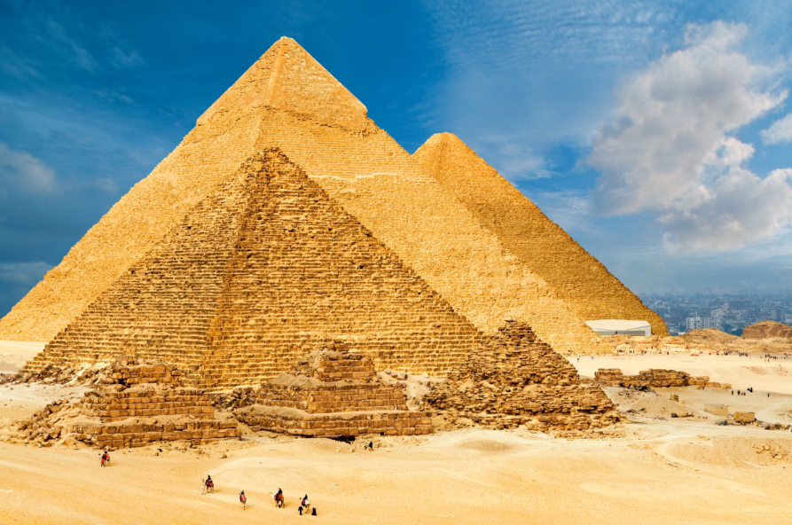
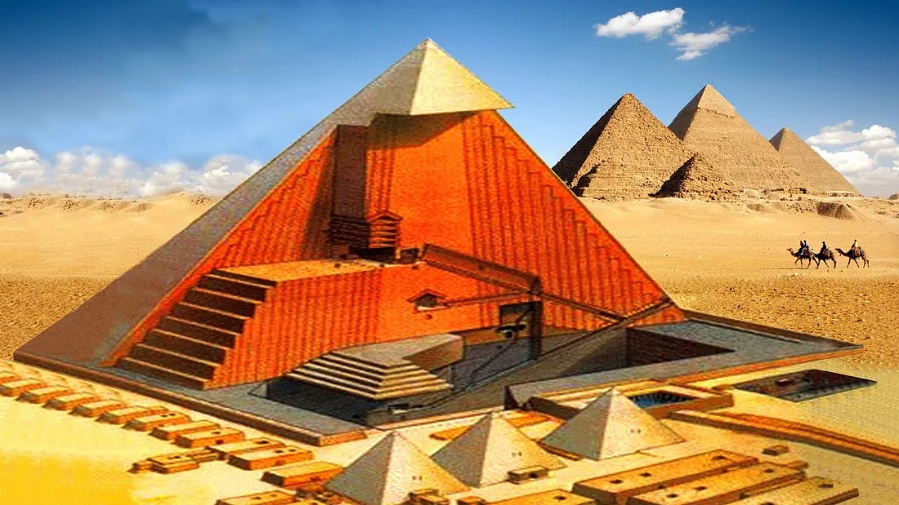
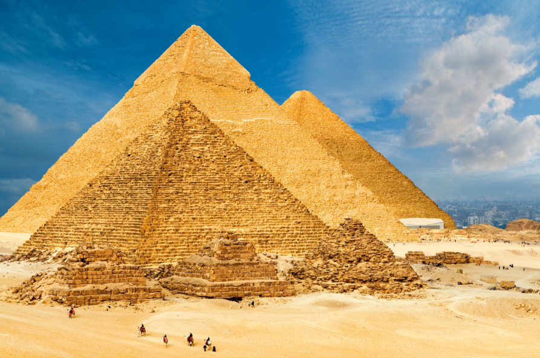

"The Pyramids speak not only of kings and gods, but of the human desire to be remembered forever."
By KennyOMG - Own work
The Great Pyramid of Giza is the only surviving wonder of the ancient world. Built over 4,500 years ago as a tomb for Pharaoh Khufu, it was a feat of engineering and mystery. With over 2 million limestone blocks and near-perfect alignment with the stars, it continues to awe modern architects and archaeologists.
 



WHO BUILT THE PYRAMIDS OF GIZA?
By Olaf Tausch - Own work
By Hesham Ebaid - Own work
Pharaoh Khufu began building the Great Pyramid of Giza around 2550 B.C. It was the largest pyramid, originally about 147 meters tall, made from roughly 2.3 million stone blocks. Khufu’s son, Khafre, built the second pyramid around 2520 B.C., which is famous for the nearby Sphinx — a limestone statue with a lion’s body and pharaoh’s head, though it’s unclear who exactly built it. The third and smallest pyramid was built by Khafre’s son Menkaure around 2490 B.C. It includes temples, queens’ pyramids, and unique decorations, but Menkaure’s sarcophagus was lost at sea in the 1800s.
🕵️ MYSTERIES OF THE PYRAMIDS OF GIZA
How were they built without modern technology?
One of the greatest mysteries is how the ancient Egyptians transported and assembled millions of heavy limestone blocks—some weighing up to 15 tons—using only simple tools. No cranes, no trucks, just human ingenuity. Some believe ramps or wooden sleds were used, but there’s still no solid evidence explaining exactly how.
Hidden chambers and unknown purposes
In recent years, scientists using advanced scanning technology have detected mysterious voids or chambers inside the Great Pyramid. Their function remains unknown—were they structural features, secret rooms, or something more?
Why do the pyramids align so perfectly?
The Great Pyramid is almost perfectly aligned with the cardinal points (north, south, east, and west). Some researchers suggest this precision reflects advanced astronomical knowledge, possibly even beyond what was known at the time. Were the builders guided by the stars?
Symbolism and spiritual meaning
The pyramid’s shape, pointing toward the sky, may have had symbolic meaning. Some theories suggest they were designed to help pharaohs ascend to the heavens, connecting the physical and spiritual worlds. Others speculate on deeper, even cosmic, significance.